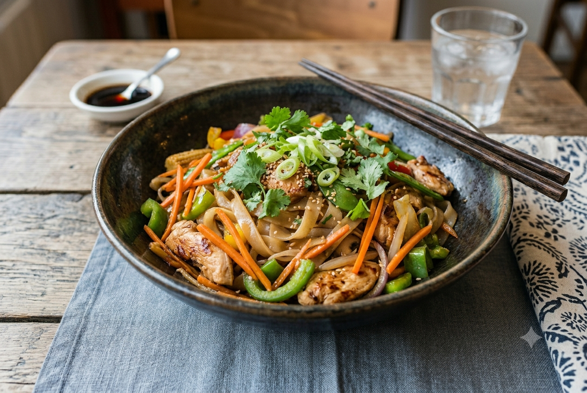

Rice noodles tossed with juicy chicken and vibrant vegetables, all brought together with soy sauce, curry and ginger. A fragrant, satisfying dish with a warmth that keeps you coming back for more.
Cook the noodles in a pot of boiling water for 4 minutes. Drain and set aside.
Cut the vegetables and chicken into small pieces.
Heat a drizzle of oil in a pan over medium heat. Add the onion, carrot and a splash of chicken stock. Cook for 5 minutes.
Once the onion and carrot are tender, add the green pepper and cook for a further 5 minutes.
Add the chicken and season with curry, ground ginger and coriander. Add a little more stock if needed.
Once the chicken is cooked through, add the soy sauce and stir well.
Finally, add the noodles and toss everything together before serving.